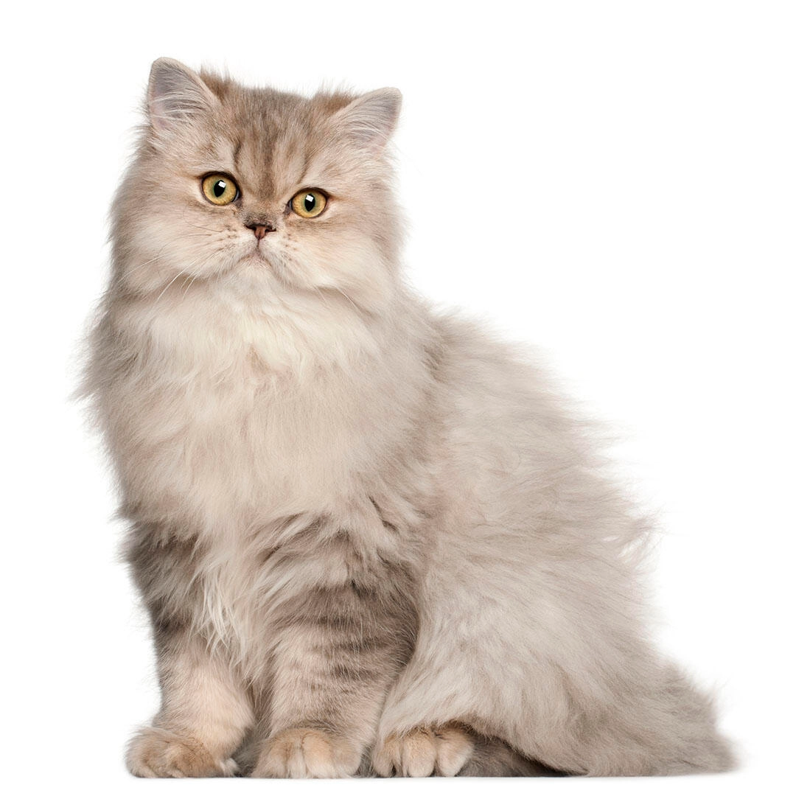

Maine Coon
The Maine Coon is a massive cat with a powerful muscular athletic body in keeping with their impressive size. They have large, pointed ears held wide and tall and an intelligent expression.
Munchkin
The Munchkin is a medium-sized cat, moderate in body type and head shape, with a thick, plush coat. The coat comes in all colors and patterns, and there is also a long-haired variety.

Persian
They might have a grumpy-looking face, but make no mistake, the Persian cat is as sweet and easy-going as it can get. The fancy felines are loving and charming creatures that would get along with the entire family if introduced to them as kittens. But beauty is not always effortless, so Persian cats do require extra attention.